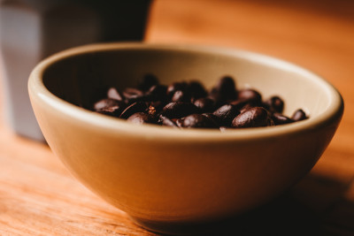

Koffie is een meestal warm genuttigde drank, die wordt bereid op basis van water en gedroogde en gebrande zaden van de koffieplant (Coffea) die vanwege hun vorm koffiebonen worden genoemd. Koffie bevat het oppeppende en verslavende middel cafeïne. De meeste soorten in het geslacht Coffea komen van nature voor in tropisch Afrika en op de eilanden in de Indische Oceaan. Ze vinden hun oorsprong in Ethiopië, Jemen en Soedan.
